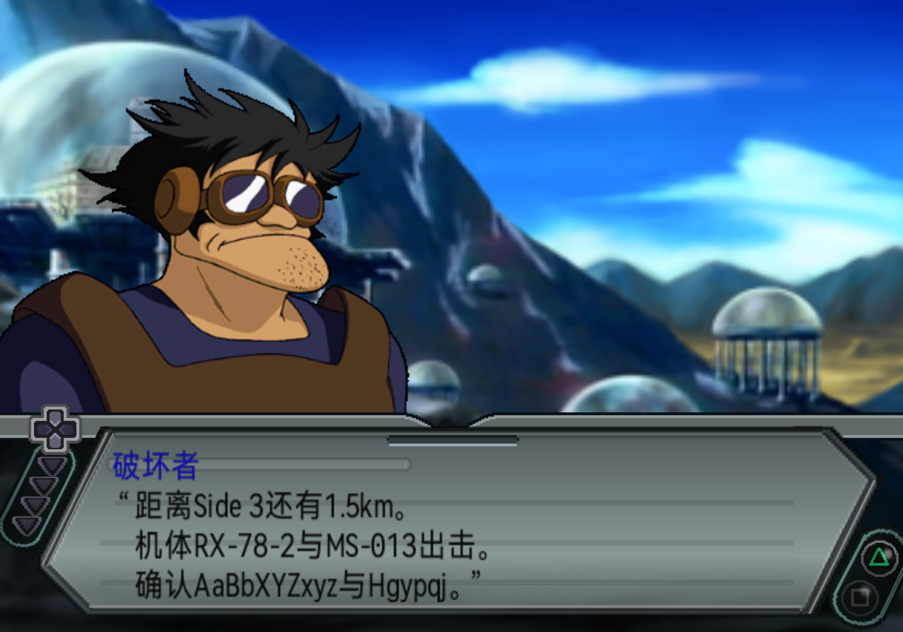
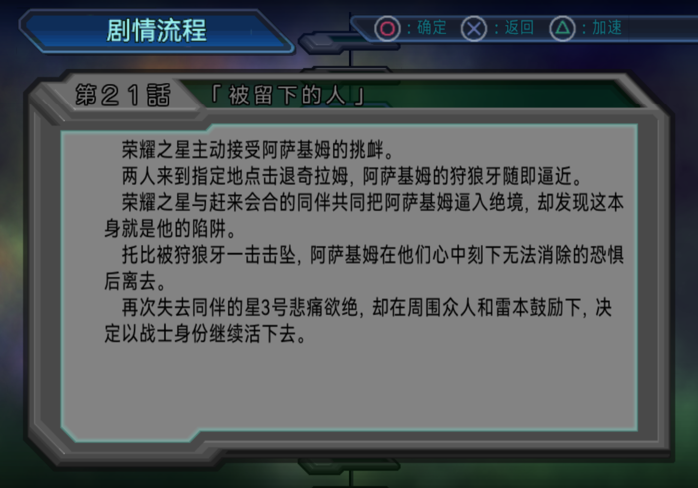
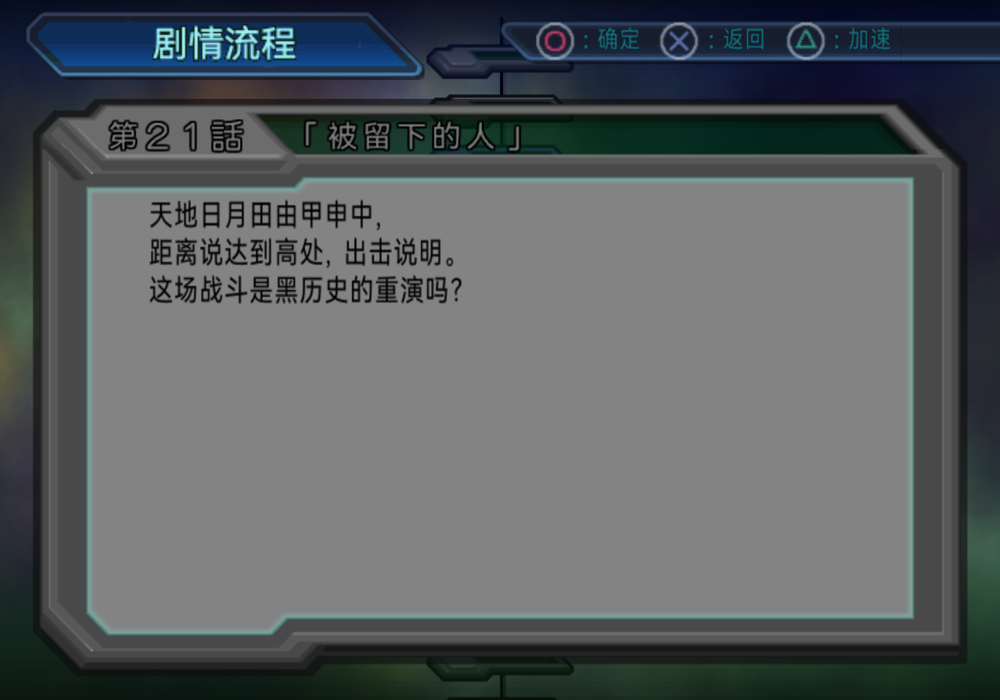
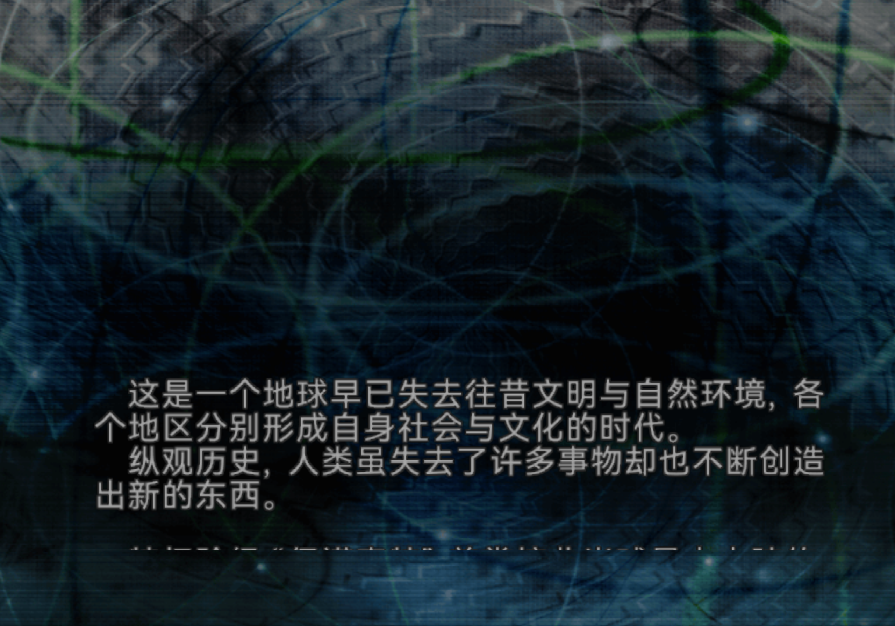
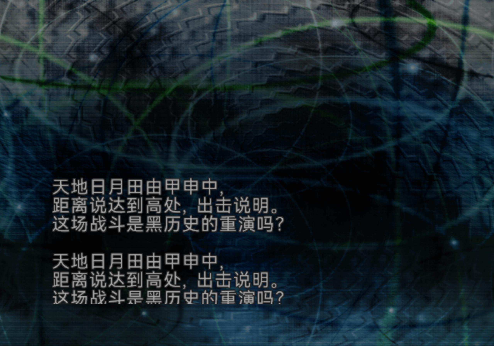
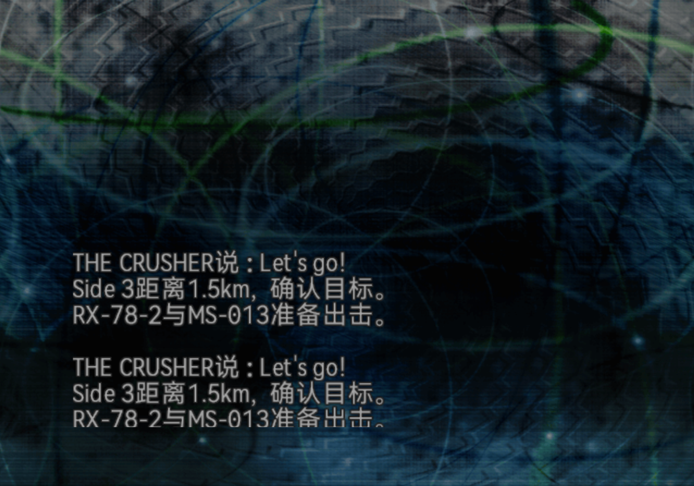
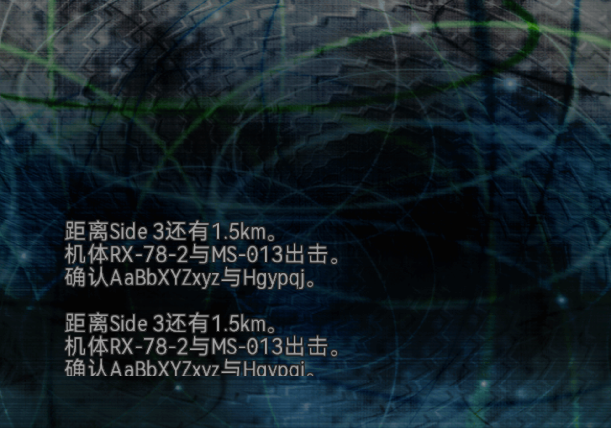

natural
自然文本

ARMSX2 Metal 4×，新 ISO 冷启动；样例仅替换运行时文本。点击截图查看完整原图。
自然文本
“天地日月田由甲申中， 距离说达到高处，出击说明。 这场战斗是黑历史的重演吗？”

“THE CRUSHER说：Let's go！ Side 3距离1.5km，确认目标。 RX-78-2与MS-013准备出击。”

“距离Side 3还有1.5km。 机体RX-78-2与MS-013出击。 确认AaBbXYZxyz与Hgypqj。”

自然文本

天地日月田由甲申中， 距离说达到高处，出击说明。 这场战斗是黑历史的重演吗？

THE CRUSHER说：Let's go！ Side 3距离1.5km，确认目标。 RX-78-2与MS-013准备出击。
距离Side 3还有1.5km。 机体RX-78-2与MS-013出击。 确认AaBbXYZxyz与Hgypqj。
自然文本

天地日月田由甲申中， 距离说达到高处，出击说明。 这场战斗是黑历史的重演吗？ 天地日月田由甲申中， 距离说达到高处，出击说明。 这场战斗是黑历史的重演吗？ 天地日月田由甲申中， 距离说达到高处，出击说明。 这场战斗是黑历史的重演吗？ 天地日月田由甲申中， 距离说达到高处，出击说明。 这场战斗是黑历史的重演吗？

THE CRUSHER说：Let's go！ Side 3距离1.5km，确认目标。 RX-78-2与MS-013准备出击。 THE CRUSHER说：Let's go！ Side 3距离1.5km，确认目标。 RX-78-2与MS-013准备出击。 THE CRUSHER说：Let's go！ Side 3距离1.5km，确认目标。 RX-78-2与MS-013准备出击。 THE CRUSHER说：Let's go！ Side 3距离1.5km，确认目标。 RX-78-2与MS-013准备出击。

距离Side 3还有1.5km。 机体RX-78-2与MS-013出击。 确认AaBbXYZxyz与Hgypqj。 距离Side 3还有1.5km。 机体RX-78-2与MS-013出击。 确认AaBbXYZxyz与Hgypqj。 距离Side 3还有1.5km。 机体RX-78-2与MS-013出击。 确认AaBbXYZxyz与Hgypqj。 距离Side 3还有1.5km。 机体RX-78-2与MS-013出击。 确认AaBbXYZxyz与Hgypqj。
